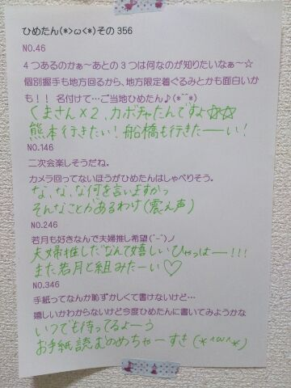

| 2014/01 19 Sun | ひめたん(*>ω<*)そ の397 |
今日は幕張で個別握手会でした！
寒い中 来てくださったみなさん
ほんとにありがとーう\( ω )/
NICE CLAUPのワンピースだよー♪
４部......おろしふわふわ
５部......ふわふわツイン
４部のはおろし「巻き」じゃないんだよ
おろし「ふわふわ」なんだよおお
りぼんは今日はおやすみだよ
なんだかたくさんの方が来てくださって
ひめたんはずーっと楽しかったよ！
最初っから最後までずーっと！
はじめましての方
勇気を出して来てくれてありがとねー♪♪
おなじみの方 いつもありがとうねっ
次にみなさんに会えるのは
２月の握手会の方もいるし
バースデーライブの方もいるけど
ずいぶん遠いなー(´；；｀)
途中で寂しくなっちゃうー
待つのってつらいんよね......
今ね「つら」って打ったらね
予測変換にね
(/)・ω・(ヾ)つらいむ
って出てきたよ！
なになにかわいすぎるーっ
あっそうそう
ハンドクリームの香り
みなさんわかりましたかねー？
正解は バニラの香りでした＊＊
あまーい香りがとってもお気に入り！
バニラの香りらぶっ

いくちゃん (生田絵梨花ちゃん)の生誕祭
とってもステキでした＊＊
いくちゃんファンのみなさんのやさしさを
とてーもとてーも感じました♪♪
もうちょっとで17さいだってね！
なんだかみてて
ほっこりしちゃったー(＊´ω`＊)
なんとなんと
メンバーを代表してお手紙を読むという
とんでもない大役を努めさせていただきましたっ
ひめたんはぶきっちょなので
言いたいことの全部が
伝わったかどうかは謎だけども(笑)
大好きないくちゃん生誕祭ってゆ
大事なイベントに参加させていただけて
とっても光栄でした☆
ほんとのお誕生日の日も
ステキないちにちになったらいいね！
さて、NOGIBINGO!2......
ごーめんすっかり告知してなかったてへ←
見てくださった方はありがとねー
ここまで#1、#2終わって
中元の空気さにはみなさんびっくりされてる
んじゃないかなーなんて思うんですが
来週は
来週はカットされてなかったら(小声)
来週はきっとまともになんかやります！
またオンエアが近くなったら
告知しよーかなーとは思うけど
忘れたらいけないから先にゆっとくね｀・ω・´

 あたしにあだ名つけて！
あたしにあだ名つけて！
お名前から ひめりん とか呼ばれてるのかな
めっちゃかわいー(＊´ω`＊)
そうねーどうしようかね
ひめりーぬちゃん とかどうー？
ひめたんがいつもつい食べ過ぎてしまう
お正月料理はなーに？
実家で過ごすと きなこ餅かな＊
でもね今年はおばあちゃんがお雑煮してくれて
あっさりな味付けで
ちょっとヘルシーだったと思うよ！ちょっとね！
今、ひめたんビームで餅を焼いています。
.........焼けません(゜∇゜)
そんな手抜きをしてはならーんっ
ちょっと面倒だけど火で焼いてください
そもそもびーむは光線であって
お餅を焼くものではなーいっ
ウルトラマンビームでお餅が焼けないのと一緒！
 ひめたんはひめたんの髪の触角と
ひめたんはひめたんの髪の触角と
とりりーぬさんどっちが大事？
触角(即答)
とりりーぬさんの長所、短所を教えてください！
長所は３秒で描けるところ
短所はスタイルが悪いところ かな(＊^^＊)
ひめたんの必殺技って
ひめたんびーむと
ひめたんれーざーと
ひめたんまじっくの他に何かあったっけ？
やめて、ほんとにやめてください(笑)
こんなこと書くと握手会とかで
「ひめたんれーざーやってー！」とか
言われちゃうでしょ(´；；｀)
ひめたんのブログの
コメント欄下２ケタに46を踏んだ方へ
手書きでコメ返するコーナー
＼ ひめたん46 ／

いつもコメントたくさん
ありがとうございます
横アリライブは当落はわかっても
座席はまだわからないってね！
なんだそれー気になるねー
１次落ちちゃったーって方も
結構いらっしゃるみたいで
きっとたくさんの方が応募してくださってるから
そーゆーことになるのかなって考えたら
喜ばしいことなんだろうけど
やっぱりひめたんはみんなに来てほしいなー
２次は当たりますように( ´ω` )
当選した方 おめでとう！
今から全曲予習しといてー♪♪
センターお疲れさまでした！
まだお受験真っ最中の方
ちょっと羽のばすことも大事だよ？
(＊´・ω・＊)
コメント(487)
2014/01/19 23:54